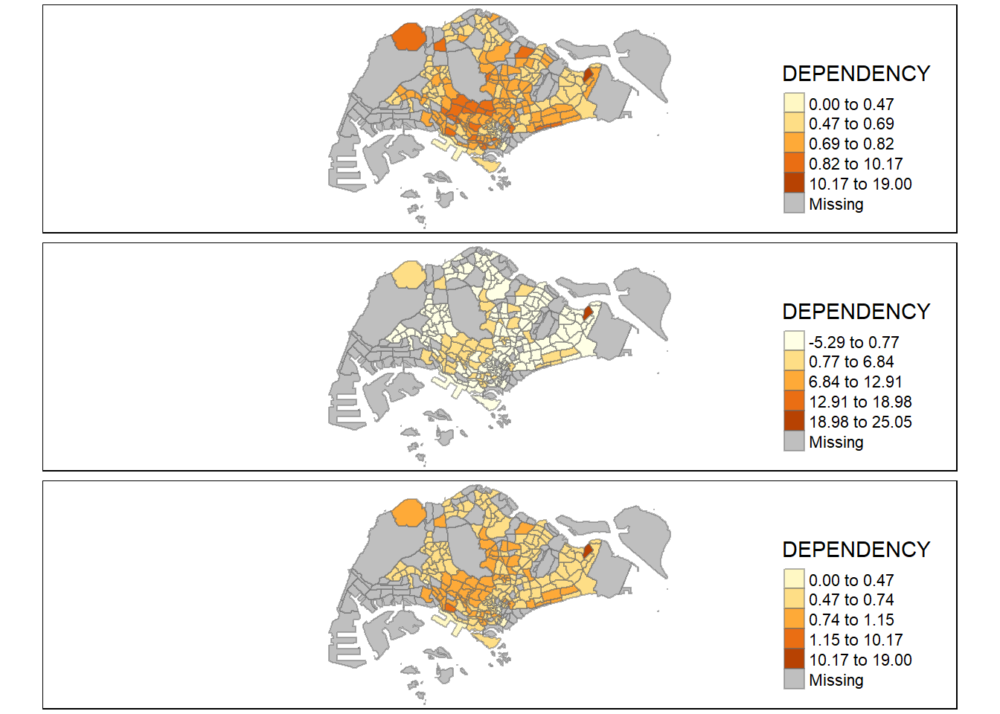
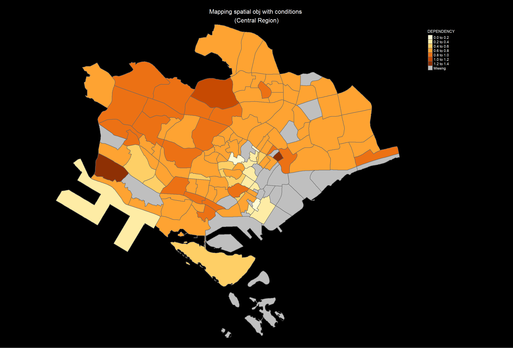

Hands-on Exercise 1.2: Choropleth Mapping with R
2.1 Overview
Choropleth mapping involves the symbolisation of enumeration units, such as countries, provinces, states, counties or census units, using area patterns or graduated colors. For example, a social scientist may need to use a choropleth map to portray the spatial distribution of aged population of Singapore by Master Plan 2014 Subzone Boundary.
2.2 Getting Started
In this hands-on exercise, we learn how to plot functional and truthful choropleth maps by using r packages called tmap package.
Beside tmap package, four other R packages will be used. They are:
readr for importing delimited text file,
tidyr for tidying data,
dplyr for wrangling data and
sf for handling geospatial data.
Among the four packages, readr, tidyr and dplyr are part of tidyverse package.
Lets us first load all the required libraries.
2.3 Importing Data into R
2.3.1 The Data
The Two datasets will be used to create the choropleth map are:
Master Plan 2014 Subzone Boundary (Web) (i.e.
MP14_SUBZONE_WEB_PL) in ESRI shapefile format.Singapore Residents by Planning Area / Subzone, Age Group, Sex and Type of Dwelling, June 2011-2020 in csv format (i.e.
respopagesextod2011to2020.csv). This is an aspatial data fie. It can be downloaded at Department of Statistics, Singapore, the specific link can be found here. Although it does not contain any coordinates values, but it’s PA and SZ fields can be used as unique identifiers to geocode toMP14_SUBZONE_WEB_PLshapefile.
2.3.2 Importing Geospatial Data into R
Reading layer `MP14_SUBZONE_WEB_PL' from data source
`C:\yixin-neo\ISSS624_AGA\Hands-on_Ex1\data\geospatial' using driver `ESRI Shapefile'
Simple feature collection with 323 features and 15 fields
Geometry type: MULTIPOLYGON
Dimension: XY
Bounding box: xmin: 2667.538 ymin: 15748.72 xmax: 56396.44 ymax: 50256.33
Projected CRS: SVY21Check the projection system of mpsz. It is not in svy21 or epsg3414. We will need to convert it later.
Coordinate Reference System:
User input: SVY21
wkt:
PROJCRS["SVY21",
BASEGEOGCRS["SVY21[WGS84]",
DATUM["World Geodetic System 1984",
ELLIPSOID["WGS 84",6378137,298.257223563,
LENGTHUNIT["metre",1]],
ID["EPSG",6326]],
PRIMEM["Greenwich",0,
ANGLEUNIT["Degree",0.0174532925199433]]],
CONVERSION["unnamed",
METHOD["Transverse Mercator",
ID["EPSG",9807]],
PARAMETER["Latitude of natural origin",1.36666666666667,
ANGLEUNIT["Degree",0.0174532925199433],
ID["EPSG",8801]],
PARAMETER["Longitude of natural origin",103.833333333333,
ANGLEUNIT["Degree",0.0174532925199433],
ID["EPSG",8802]],
PARAMETER["Scale factor at natural origin",1,
SCALEUNIT["unity",1],
ID["EPSG",8805]],
PARAMETER["False easting",28001.642,
LENGTHUNIT["metre",1],
ID["EPSG",8806]],
PARAMETER["False northing",38744.572,
LENGTHUNIT["metre",1],
ID["EPSG",8807]]],
CS[Cartesian,2],
AXIS["(E)",east,
ORDER[1],
LENGTHUNIT["metre",1,
ID["EPSG",9001]]],
AXIS["(N)",north,
ORDER[2],
LENGTHUNIT["metre",1,
ID["EPSG",9001]]]]Take a look at first few records of data
Rows: 323
Columns: 16
$ OBJECTID <int> 1, 2, 3, 4, 5, 6, 7, 8, 9, 10, 11, 12, 13, 14, 15, 16, 17, …
$ SUBZONE_NO <int> 1, 1, 3, 8, 3, 7, 9, 2, 13, 7, 12, 6, 1, 5, 1, 1, 3, 2, 2, …
$ SUBZONE_N <chr> "MARINA SOUTH", "PEARL'S HILL", "BOAT QUAY", "HENDERSON HIL…
$ SUBZONE_C <chr> "MSSZ01", "OTSZ01", "SRSZ03", "BMSZ08", "BMSZ03", "BMSZ07",…
$ CA_IND <chr> "Y", "Y", "Y", "N", "N", "N", "N", "Y", "N", "N", "N", "N",…
$ PLN_AREA_N <chr> "MARINA SOUTH", "OUTRAM", "SINGAPORE RIVER", "BUKIT MERAH",…
$ PLN_AREA_C <chr> "MS", "OT", "SR", "BM", "BM", "BM", "BM", "SR", "QT", "QT",…
$ REGION_N <chr> "CENTRAL REGION", "CENTRAL REGION", "CENTRAL REGION", "CENT…
$ REGION_C <chr> "CR", "CR", "CR", "CR", "CR", "CR", "CR", "CR", "CR", "CR",…
$ INC_CRC <chr> "5ED7EB253F99252E", "8C7149B9EB32EEFC", "C35FEFF02B13E0E5",…
$ FMEL_UPD_D <date> 2014-12-05, 2014-12-05, 2014-12-05, 2014-12-05, 2014-12-05…
$ X_ADDR <dbl> 31595.84, 28679.06, 29654.96, 26782.83, 26201.96, 25358.82,…
$ Y_ADDR <dbl> 29220.19, 29782.05, 29974.66, 29933.77, 30005.70, 29991.38,…
$ SHAPE_Leng <dbl> 5267.381, 3506.107, 1740.926, 3313.625, 2825.594, 4428.913,…
$ SHAPE_Area <dbl> 1630379.27, 559816.25, 160807.50, 595428.89, 387429.44, 103…
$ geometry <MULTIPOLYGON [m]> MULTIPOLYGON (((31495.56 30..., MULTIPOLYGON (…Lets convert to EPSG3414 now.
Coordinate Reference System:
User input: EPSG:3414
wkt:
PROJCRS["SVY21 / Singapore TM",
BASEGEOGCRS["SVY21",
DATUM["SVY21",
ELLIPSOID["WGS 84",6378137,298.257223563,
LENGTHUNIT["metre",1]]],
PRIMEM["Greenwich",0,
ANGLEUNIT["degree",0.0174532925199433]],
ID["EPSG",4757]],
CONVERSION["Singapore Transverse Mercator",
METHOD["Transverse Mercator",
ID["EPSG",9807]],
PARAMETER["Latitude of natural origin",1.36666666666667,
ANGLEUNIT["degree",0.0174532925199433],
ID["EPSG",8801]],
PARAMETER["Longitude of natural origin",103.833333333333,
ANGLEUNIT["degree",0.0174532925199433],
ID["EPSG",8802]],
PARAMETER["Scale factor at natural origin",1,
SCALEUNIT["unity",1],
ID["EPSG",8805]],
PARAMETER["False easting",28001.642,
LENGTHUNIT["metre",1],
ID["EPSG",8806]],
PARAMETER["False northing",38744.572,
LENGTHUNIT["metre",1],
ID["EPSG",8807]]],
CS[Cartesian,2],
AXIS["northing (N)",north,
ORDER[1],
LENGTHUNIT["metre",1]],
AXIS["easting (E)",east,
ORDER[2],
LENGTHUNIT["metre",1]],
USAGE[
SCOPE["Cadastre, engineering survey, topographic mapping."],
AREA["Singapore - onshore and offshore."],
BBOX[1.13,103.59,1.47,104.07]],
ID["EPSG",3414]]Simple feature collection with 3 features and 15 fields
Geometry type: MULTIPOLYGON
Dimension: XY
Bounding box: xmin: 28160.23 ymin: 28369.47 xmax: 32362.39 ymax: 30247.18
Projected CRS: SVY21 / Singapore TM
OBJECTID SUBZONE_NO SUBZONE_N SUBZONE_C CA_IND PLN_AREA_N PLN_AREA_C
1 1 1 MARINA SOUTH MSSZ01 Y MARINA SOUTH MS
2 2 1 PEARL'S HILL OTSZ01 Y OUTRAM OT
3 3 3 BOAT QUAY SRSZ03 Y SINGAPORE RIVER SR
REGION_N REGION_C INC_CRC FMEL_UPD_D X_ADDR Y_ADDR
1 CENTRAL REGION CR 5ED7EB253F99252E 2014-12-05 31595.84 29220.19
2 CENTRAL REGION CR 8C7149B9EB32EEFC 2014-12-05 28679.06 29782.05
3 CENTRAL REGION CR C35FEFF02B13E0E5 2014-12-05 29654.96 29974.66
SHAPE_Leng SHAPE_Area geometry
1 5267.381 1630379.3 MULTIPOLYGON (((31495.56 30...
2 3506.107 559816.2 MULTIPOLYGON (((29092.28 30...
3 1740.926 160807.5 MULTIPOLYGON (((29932.33 29...2.3.3 Importing Attribute Data into R
Next, we will import respopagsex2000to2020.csv file into RStudio and save the file into an R dataframe called popagsex.
The task will be performed by using read_csv() function of readr package as shown in the code chunk below.
# A tibble: 6 × 7
PA SZ AG Sex TOD Pop Time
<chr> <chr> <chr> <chr> <chr> <dbl> <dbl>
1 Ang Mo Kio Ang Mo Kio Town Centre 0_to_4 Males HDB 1- and 2-Room … 0 2011
2 Ang Mo Kio Ang Mo Kio Town Centre 0_to_4 Males HDB 3-Room Flats 10 2011
3 Ang Mo Kio Ang Mo Kio Town Centre 0_to_4 Males HDB 4-Room Flats 30 2011
4 Ang Mo Kio Ang Mo Kio Town Centre 0_to_4 Males HDB 5-Room and Exe… 50 2011
5 Ang Mo Kio Ang Mo Kio Town Centre 0_to_4 Males HUDC Flats (exclud… 0 2011
6 Ang Mo Kio Ang Mo Kio Town Centre 0_to_4 Males Landed Properties 0 2011Summary stats using skimr package.
| Name | popdata |
| Number of rows | 984656 |
| Number of columns | 7 |
| _______________________ | |
| Column type frequency: | |
| character | 5 |
| numeric | 2 |
| ________________________ | |
| Group variables | None |
Variable type: character
| skim_variable | n_missing | complete_rate | min | max | empty | n_unique | whitespace |
|---|---|---|---|---|---|---|---|
| PA | 0 | 1 | 4 | 23 | 0 | 55 | 0 |
| SZ | 0 | 1 | 4 | 29 | 0 | 335 | 0 |
| AG | 0 | 1 | 6 | 11 | 0 | 19 | 0 |
| Sex | 0 | 1 | 5 | 7 | 0 | 2 | 0 |
| TOD | 0 | 1 | 6 | 39 | 0 | 8 | 0 |
Variable type: numeric
| skim_variable | n_missing | complete_rate | mean | sd | p0 | p25 | p50 | p75 | p100 | hist |
|---|---|---|---|---|---|---|---|---|---|---|
| Pop | 0 | 1 | 39.86 | 132.25 | 0 | 0 | 0 | 10 | 2860 | ▇▁▁▁▁ |
| Time | 0 | 1 | 2015.51 | 2.88 | 2011 | 2013 | 2016 | 2018 | 2020 | ▇▇▇▇▇ |
2.3.4 Data preparation
Prepare a data table with year 2020 values. The data table should include the variables PA, SZ, YOUNG, ECONOMY ACTIVE, AGED, TOTAL, DEPENDENCY.
YOUNG: age group 0 to 4 until age group 20 to 24,
ECONOMY ACTIVE: age group 25-29 until age group 60-64,
AGED: age group 65 and above,
TOTAL: all age group, and
DEPENDENCY: the ratio between young and aged against economy active group
2.3.4.1 Data Wrangling
pivot_wider() (rows to column headers) of tidyr package, and
mutate() (create new cal col), filter() (subset rows), group_by() and select() (select cols) of dplyr package
The complete code chunk:
popdata2020 <- popdata %>%
filter(Time==2020) %>%
group_by(PA,SZ,AG) %>% #<< for calculating POP column below
summarise(`POP` = sum(Pop)) %>%
ungroup() %>%
pivot_wider(names_from = AG,
values_from = POP) %>%
mutate(YOUNG = rowSums(.[3:6])
+rowSums(.[14])) %>%
mutate(`ECONOMY ACTIVE` = rowSums(.[7:13])+rowSums(.[15])) %>%
mutate(AGED = rowSums(.[16:21])) %>%
mutate(TOTAL = rowSums(.[3:21])) %>%
mutate(DEPENDENCY = (YOUNG+AGED)/`ECONOMY ACTIVE`) %>%
select(PA, SZ,YOUNG,'ECONOMY ACTIVE', AGED, TOTAL, DEPENDENCY)
head(popdata2020)# A tibble: 6 × 7
PA SZ YOUNG `ECONOMY ACTIVE` AGED TOTAL DEPENDENCY
<chr> <chr> <dbl> <dbl> <dbl> <dbl> <dbl>
1 Ang Mo Kio Ang Mo Kio Town Cent… 1290 2760 760 4810 0.743
2 Ang Mo Kio Cheng San 5640 16460 6050 28150 0.710
3 Ang Mo Kio Chong Boon 5100 15000 6470 26570 0.771
4 Ang Mo Kio Kebun Bahru 4620 13010 5120 22750 0.749
5 Ang Mo Kio Sembawang Hills 1880 3630 1310 6820 0.879
6 Ang Mo Kio Shangri-La 3330 9050 3610 15990 0.767To understand the first 6 lines of code in the code chunk above, print the output:
# A tibble: 6 × 21
PA SZ `0_to_4` `10_to_14` `15_to_19` `20_to_24` `25_to_29` `30_to_34`
<chr> <chr> <dbl> <dbl> <dbl> <dbl> <dbl> <dbl>
1 Ang Mo … Ang … 170 280 340 270 260 310
2 Ang Mo … Chen… 1060 1040 1160 1330 1720 2020
3 Ang Mo … Chon… 850 1020 1070 1310 1610 1890
4 Ang Mo … Kebu… 680 960 1010 1170 1410 1420
5 Ang Mo … Semb… 210 400 450 500 500 340
6 Ang Mo … Shan… 560 640 700 860 970 1030
# ℹ 13 more variables: `35_to_39` <dbl>, `40_to_44` <dbl>, `45_to_49` <dbl>,
# `50_to_54` <dbl>, `55_to_59` <dbl>, `5_to_9` <dbl>, `60_to_64` <dbl>,
# `65_to_69` <dbl>, `70_to_74` <dbl>, `75_to_79` <dbl>, `80_to_84` <dbl>,
# `85_to_89` <dbl>, `90_and_over` <dbl>2.3.4.2 Joining the attribute data and geospatial data
Before we can perform the georelational join, one extra step is required to convert the values in PA and SZ fields to uppercase. This is because the values of PA and SZ fields are made up of upper- and lowercase. On the other, hand the SUBZONE_N and PLN_AREA_N are in uppercase.
Since mpsz’s SUBZONE_N and PLN_AREA_N are in uppercase, we have to convert PA and SZ fields in popdata2020 into all uppercase using:
mutate.at()<- mutate multiple columns
first argument of mutate_at(): .var <- list of columns generated by vars()
second argument: .funs <- a function fun, a quosure style lambda. The function used in toupper() <- to upper case
There are many ways to achieve the final output
popdata2020 <- popdata2020 %>%
mutate_at(.vars= vars(PA, SZ),
.funs = funs(toupper)) %>%
filter(`ECONOMY ACTIVE` >0)
popdata2020# A tibble: 234 × 7
PA SZ YOUNG `ECONOMY ACTIVE` AGED TOTAL DEPENDENCY
<chr> <chr> <dbl> <dbl> <dbl> <dbl> <dbl>
1 ANG MO KIO ANG MO KIO TOWN CEN… 1290 2760 760 4810 0.743
2 ANG MO KIO CHENG SAN 5640 16460 6050 28150 0.710
3 ANG MO KIO CHONG BOON 5100 15000 6470 26570 0.771
4 ANG MO KIO KEBUN BAHRU 4620 13010 5120 22750 0.749
5 ANG MO KIO SEMBAWANG HILLS 1880 3630 1310 6820 0.879
6 ANG MO KIO SHANGRI-LA 3330 9050 3610 15990 0.767
7 ANG MO KIO TAGORE 1940 4480 1530 7950 0.775
8 ANG MO KIO TOWNSVILLE 4190 11950 5100 21240 0.777
9 ANG MO KIO YIO CHU KANG EAST 1110 2410 750 4270 0.772
10 ANG MO KIO YIO CHU KANG WEST 5690 13750 4680 24120 0.754
# ℹ 224 more rowsThe reason for filtering is because some subzones are not inhibited by residents as seen below.
Next, left_join() of dplyr is used to join the geographical data and attribute table using planning subzone name e.g. SUBZONE_N and SZ as the common identifier.
Simple feature collection with 323 features and 21 fields
Geometry type: MULTIPOLYGON
Dimension: XY
Bounding box: xmin: 2667.538 ymin: 15748.72 xmax: 56396.44 ymax: 50256.33
Projected CRS: SVY21 / Singapore TM
First 10 features:
OBJECTID SUBZONE_NO SUBZONE_N SUBZONE_C CA_IND PLN_AREA_N
1 1 1 MARINA SOUTH MSSZ01 Y MARINA SOUTH
2 2 1 PEARL'S HILL OTSZ01 Y OUTRAM
3 3 3 BOAT QUAY SRSZ03 Y SINGAPORE RIVER
4 4 8 HENDERSON HILL BMSZ08 N BUKIT MERAH
5 5 3 REDHILL BMSZ03 N BUKIT MERAH
6 6 7 ALEXANDRA HILL BMSZ07 N BUKIT MERAH
7 7 9 BUKIT HO SWEE BMSZ09 N BUKIT MERAH
8 8 2 CLARKE QUAY SRSZ02 Y SINGAPORE RIVER
9 9 13 PASIR PANJANG 1 QTSZ13 N QUEENSTOWN
10 10 7 QUEENSWAY QTSZ07 N QUEENSTOWN
PLN_AREA_C REGION_N REGION_C INC_CRC FMEL_UPD_D X_ADDR
1 MS CENTRAL REGION CR 5ED7EB253F99252E 2014-12-05 31595.84
2 OT CENTRAL REGION CR 8C7149B9EB32EEFC 2014-12-05 28679.06
3 SR CENTRAL REGION CR C35FEFF02B13E0E5 2014-12-05 29654.96
4 BM CENTRAL REGION CR 3775D82C5DDBEFBD 2014-12-05 26782.83
5 BM CENTRAL REGION CR 85D9ABEF0A40678F 2014-12-05 26201.96
6 BM CENTRAL REGION CR 9D286521EF5E3B59 2014-12-05 25358.82
7 BM CENTRAL REGION CR 7839A8577144EFE2 2014-12-05 27680.06
8 SR CENTRAL REGION CR 48661DC0FBA09F7A 2014-12-05 29253.21
9 QT CENTRAL REGION CR 1F721290C421BFAB 2014-12-05 22077.34
10 QT CENTRAL REGION CR 3580D2AFFBEE914C 2014-12-05 24168.31
Y_ADDR SHAPE_Leng SHAPE_Area PA YOUNG ECONOMY ACTIVE AGED
1 29220.19 5267.381 1630379.3 <NA> NA NA NA
2 29782.05 3506.107 559816.2 OUTRAM 930 3130 2120
3 29974.66 1740.926 160807.5 SINGAPORE RIVER 0 40 10
4 29933.77 3313.625 595428.9 BUKIT MERAH 2600 7450 3320
5 30005.70 2825.594 387429.4 BUKIT MERAH 2760 6160 1740
6 29991.38 4428.913 1030378.8 BUKIT MERAH 2800 7340 3420
7 30230.86 3275.312 551732.0 BUKIT MERAH 2750 8080 3610
8 30222.86 2208.619 290184.7 SINGAPORE RIVER 0 50 10
9 29893.78 6571.323 1084792.3 QUEENSTOWN 1120 2770 610
10 30104.18 3454.239 631644.3 QUEENSTOWN 30 160 60
TOTAL DEPENDENCY geometry
1 NA NA MULTIPOLYGON (((31495.56 30...
2 6180 0.9744409 MULTIPOLYGON (((29092.28 30...
3 50 0.2500000 MULTIPOLYGON (((29932.33 29...
4 13370 0.7946309 MULTIPOLYGON (((27131.28 30...
5 10660 0.7305195 MULTIPOLYGON (((26451.03 30...
6 13560 0.8474114 MULTIPOLYGON (((25899.7 297...
7 14440 0.7871287 MULTIPOLYGON (((27746.95 30...
8 60 0.2000000 MULTIPOLYGON (((29351.26 29...
9 4500 0.6245487 MULTIPOLYGON (((20996.49 30...
10 250 0.5625000 MULTIPOLYGON (((24472.11 29...left_join() of dplyr package is used with mpsz simple feature data frame as the left data table is to ensure that the output will be a simple features data frame.
Original # rows in mpsz3414 = 323
Original # of rows in popdata2022 = 234
Final # of rows in mpsz_pop2020 = 323
Write the data as rds, can preserve the format of data.
Lets take a look at the df mpsz_pop2020
2.4 Choropleth Mapping Geospatial Data Using tmap
Two approaches can be used to prepare thematic map using tmap, they are:
Plotting a thematic map quickly by using qtm().
Plotting highly customisable thematic map by using tmap elements.
2.4.1 Plotting a choropleth map quickly by using qtm()
The easiest and quickest to draw a choropleth map using tmap is using qtm(). It is concise and provides a good default visualisation in many cases.
tmap_mode('plot')
#tmap_mode('view')
#ttm()
#last_map()
#tmap_options(check.and.fix = TRUE)
qtm(mpsz_pop2020,
fill='DEPENDENCY')Things to learn from the code chunk above:
tmap_mode() with “plot” option is used to produce a static map. For interactive mode, “view” option should be used.
fill argument is used to map the attribute (i.e. DEPENDENCY)
2.4.2 Creating a Choropleth map by using tmap’s elements
tmap’ drawing elements (unlike qtm() ) is able to give us finer control over our chloropleth map.
tm_shape() <- define input data and specify the shape object / spatial data object
tm_fill() <- fills polygons (no border)
style: method to process the color scale when
col (data variable)is a numeric variable. To process numeric and categorical use “cat”palette : palettes names or vectors of colors. default is taken from tm_layout’s aes.paletttes argument. To reverse the colour scheme , add a “-” prefix.
tm_borders() <- draws the borders of polygons (alpha is 0-1, transparency)
tm_polygons() (= tm_fill() + tm_borders() )<- fills the polygon and draws the polygon borders
*qtm = shape + polygon or * qtm = shape + fill + border
tm_layout() <- specify map layout
- aes.palette <- ‘seq’ (sequential palettes), ‘div’ (diverging palettes) , ‘cat’ (categorical palettes)
tm_compass() <- create map compass
tm_scale_bar() <- creates scale bar
tm_grid() <- creates grid lines (alpha is 0-1, transparency of grid lines)
tm_credits() <- create a text for credits
Show the code
tm_shape(mpsz_pop2020)+
tm_fill("DEPENDENCY",
style = "quantile",
palette = "Reds",
title = "Dependency ratio") +
tm_layout(main.title = "Distribution of Dependency Ratio by planning subzone",
main.title.position = "center",
main.title.size = 1.2,
legend.height = 0.45,
legend.width = 0.35,
frame = TRUE) +
tm_borders(alpha = 0.5) +
tm_compass(type="8star", size = 2) +
tm_scale_bar() +
tm_grid(alpha =0.2) +
tm_credits("Source: Planning Sub-zone boundary from Urban Redevelopment Authorithy (URA)\n and Population data from Department of Statistics DOS",
position = c("left", "bottom"))| OBJECTID | SUBZONE_NO | SUBZONE_N | SUBZONE_C | CA_IND | PLN_AREA_N | PLN_AREA_C | REGION_N | REGION_C | INC_CRC | FMEL_UPD_D | X_ADDR | Y_ADDR | SHAPE_Leng | SHAPE_Area | PA | YOUNG | ECONOMY ACTIVE | AGED | TOTAL | DEPENDENCY | geometry |
|---|---|---|---|---|---|---|---|---|---|---|---|---|---|---|---|---|---|---|---|---|---|
| 1 | 1 | MARINA SOUTH | MSSZ01 | Y | MARINA SOUTH | MS | CENTRAL REGION | CR | 5ED7EB253F99252E | 2014-12-05 | 31595.84 | 29220.19 | 5267.381 | 1630379.3 | NA | NA | NA | NA | NA | NA | MULTIPOLYGON (((31495.56 30… |
| 2 | 1 | PEARL’S HILL | OTSZ01 | Y | OUTRAM | OT | CENTRAL REGION | CR | 8C7149B9EB32EEFC | 2014-12-05 | 28679.06 | 29782.05 | 3506.107 | 559816.2 | OUTRAM | 930 | 3130 | 2120 | 6180 | 0.9744409 | MULTIPOLYGON (((29092.28 30… |
| 3 | 3 | BOAT QUAY | SRSZ03 | Y | SINGAPORE RIVER | SR | CENTRAL REGION | CR | C35FEFF02B13E0E5 | 2014-12-05 | 29654.96 | 29974.66 | 1740.926 | 160807.5 | SINGAPORE RIVER | 0 | 40 | 10 | 50 | 0.2500000 | MULTIPOLYGON (((29932.33 29… |
2.4.2.1 Drawing a base map
Basic building blocks are tm_fill() and tm_polygons().
tm_polygons() = fill + borders

2.4.2.2 Drawing a choropleth map using tm_polygons()
To draw a choropleth map showing the geographical distribution of a selected variable by planning subzone, we just need to assign the target variable such as Dependency to tm_polygons().


Things to learn from tm_polygons():
The default interval binning used to draw the choropleth map is called “pretty”. A detailed discussion of the data classification methods supported by tmap will be provided in sub-section 4.3.
The default colour scheme used is
YlOrRdof ColorBrewer. You will learn more about the color scheme in sub-section 4.4.By default, Missing value will be shaded in grey.
2.4.2.3 Drawing a choropleth map using tm_fill() + *tm_border()**
Actually, tm_polygons() is a wraper of tm_fill() and tm_border(). tm_fill() shades the polygons by using the default colour scheme and tm_borders() adds the borders of the shapefile onto the choropleth map.

Apart from alpha (transparency number 0 - 1), other arguments are
col = border colour,
lwd = border line width. The default is 1, and
lty = border line type. The default is “solid”.
2.4.3 Data classification methods of tmap
Most choropleth maps employ some methods of data classification. The point of classification is to take a large number of observations and group them into data ranges or classes.
tmap provides a total ten data classification methods, namely: fixed, sd, equal, pretty (default), quantile, kmeans, hclust, bclust, fisher, and jenks.
To define a data classification method, the style argument of tm_fill() or tm_polygons() will be used.
2.4.3.1 Plotting choropleth maps with built-in classification methods
The codes below uses quantile classification with 5 classes.

Using equal classification method

Distribution of quantile data classification method are more evenly distributed then equal data classification method.
Warning: Maps Lie!
DIY: Using what you had learned, prepare choropleth maps by using different classification methods supported by tmap and compare their differences.
Using tmap_arrange:
kmeans<- tm_shape(mpsz_pop2020)+
tm_fill("DEPENDENCY", n = 5, style = 'kmeans') +
tm_borders(alpha = 0.5)
sd <- tm_shape(mpsz_pop2020)+
tm_fill("DEPENDENCY", n = 5, style = 'sd') +
tm_borders(alpha = 0.5)
fisher <- tm_shape(mpsz_pop2020)+
tm_fill("DEPENDENCY", n = 5, style = 'fisher') +
tm_borders(alpha = 0.5)
tmap_arrange(kmeans, sd, fisher, asp = 4, nrow=3)
DIY: Preparing choropleth maps by using similar classification method but with different numbers of classes (i.e. 2, 6, 10, 20). Compare the output maps, what observation can you draw?
Assigning multiple values to at least one of the aesthetics arguments.
2.4.3.2 Plotting choropleth maps with custome break
The breakpoints can be set explicitly by means of the breaks argument to the tm_fill().
breaks include min and max
to have n categories, n+1 elements to be specified in breaks option
values must be in increasing order
Good practise: descriptive statistics on variable before setting break points
Min. 1st Qu. Median Mean 3rd Qu. Max. NA's
0.0000 0.6519 0.7025 0.7742 0.7645 19.0000 92 With reference to summary stats and boxplot above,
break points are 0.6, 0.7, 0.8, 0.9
min = 0 and max = 1.0
break vector is thus c(0, 0.6, 0.7, 0.8, 0.9, 1.0)

2.4.4 Colour scheme
2.4.4.1 Using ColourBrewer palette (predefined)
(YIOrRd, YIORrBr, YIGnBu, YIGn, Reds, RdPu, Purples, PuRd, PuBuGn, PuBu, OrRd, Oranges, Greys, Greens, GnBu, BuPu, BuGn, Blues)
Assign the preferred colour to palette argument of tm_fill()


2.4.5 Map Layouts
customise title, scale bar, compass, margins, aspect ratios
other than colour palette and data classification (breaks) which is done in tm_fill()
2.4.5.1 Map Legend
tm_shape(mpsz_pop2020)+
tm_fill("DEPENDENCY",
style = "jenks",
palette = "Blues",
legend.hist = TRUE,
legend.is.portrait = TRUE,
legend.hist.z = 0.1) +
tm_layout(main.title = "Distribution of Dependency Ratio by planning subzone \n(Jenks classification)",
main.title.position = "center",
main.title.size = 1,
legend.height = 0.45,
legend.width = 0.35,
legend.outside = FALSE,
legend.position = c("right", "bottom"),
frame = FALSE) +
tm_borders(alpha = 0.5)
2.4.5.2 Map style
tmap allows a wide variety of layout settings to be changed. They can be called by using tmap_style()
Predefined styles: ‘white’, ‘gray’, ‘natural’, ‘bw’, ‘classic’, ‘cobalt’, albatross’, ‘beaver’, ‘col_blind’, ‘watercolor’
Below is an example of classic style

2.4.5.3 Cartographic Furniture
Can include other map furniture like compass, scale bar, and grid lines
tmap_style has to be used at the last, think cannot mix with tm
tm_shape(mpsz_pop2020)+
tm_fill("DEPENDENCY",
style = "quantile",
palette = "Reds",
title = "No. of persons") +
tm_layout(main.title = "Distribution of Dependency Ratio \nby planning subzone",
main.title.position = "center",
main.title.size = 1.0,
legend.height = 0.45,
legend.width = 0.35,
frame = TRUE) +
tm_borders(alpha = 0.5) +
tm_compass(type="8star", size = 2) +
tm_scale_bar(width = 0.15) +
tm_grid(lwd = 0.1, alpha = 0.2) +
tm_credits("Source: Planning Sub-zone boundary from Urban Redevelopment Authorithy (URA)\n and Population data from Department of Statistics DOS",
position = c("left", "bottom")) +
tmap_style('natural')To reset the default style, refer below
2.4.6 Drawing Small Multiple Choropleth Maps
Small multiple maps, also referred to as facet maps, are composed of many maps arrange side-by-side, and sometimes stacked vertically. Small multiple maps enable the visualisation of how spatial relationships change with respect to another variable, such as time.
In tmap, small multiple maps can be plotted in three ways:
by assigning multiple values to at least one of the asthetic arguments,
by defining a group-by variable in tm_facets(), and
by creating multiple stand-alone maps with tmap_arrange().
2.4.6.1 By assigning multiple values to at least one of the aesthetic arguments
Small multiple choropleth maps are created by
2.4.6.1.1 Defining ncols in tm_fill() : c(‘YOUNG’, ‘AGED’)
2.4.6.1.2 Assigning multiple values to at least one of the aesthetic arguments
- shape + polygon method (Prof’s)
tm_shape(mpsz_pop2020)+
tm_polygons(c("DEPENDENCY","AGED"),
style = c("equal", "quantile"),
palette = list("Blues","Greens")) +
tm_layout(legend.position = c("right", "bottom"),
legend.height = 0.35,
legend.width = 0.35) +
tmap_style('white')- shape + fill + borders method (NYX’s)
2.4.6.2 By defining a group-by variable in tm_facets()
In this example, multiple small choropleth maps are created by using tm_facets().
thres.poly: number that specifies the threshold at which polygons are taken into account. The number itself corresponds to the proportion of the area sizes of the polygons to the total polygon size. By default, all polygons are drawn.

2.4.6.3 By creating multiple stand-alone maps with tmap_arrange()
Creating multiple stand-alone maps with tmap_arrange() asp : aspect ratio
nrow : number of rows (ncols)
youngmap <- tm_shape(mpsz_pop2020)+
tm_polygons("YOUNG",
style = "quantile",
palette = "Blues") +
tm_layout(legend.position = c('right','bottom'),
legend.height = 0.5,
legend.width = 0.35)
agedmap <- tm_shape(mpsz_pop2020)+
tm_polygons("AGED",
style = "quantile",
palette = "Blues") +
tm_layout(legend.position = c('right','bottom'),
legend.height = 0.5,
legend.width = 0.35)
tmap_arrange(youngmap, agedmap, asp=3, ncol=1, nrow=2)2.4.7 Mappping Spatial Object Meeting a Selection Criterion
Use selection funtion to map spatial objects meeting the selection criterion. The comma , is used to indicate that we want to select all columns for the rows that meet the condition.
tm_shape(mpsz_pop2020[mpsz_pop2020$REGION_N=="CENTRAL REGION", ])+
tm_fill("DEPENDENCY",
style = "quantile",
palette = "Blues",
legend.hist = TRUE,
legend.is.portrait = TRUE,
legend.hist.z = 0.3) +
tm_layout(main.title = "Mapping spatial obj with conditions \n(Central Region)",
main.title.position = "center",
main.title.size = 1,
legend.outside = TRUE,
legend.height = 0.3,
legend.width = 0.3,
legend.title.size= 0.8,
legend.text.size= 0.6,
legend.position = c("right", "bottom"),
frame = FALSE,
bg.color = "mintcream") + #call colors()
tm_borders(alpha = 0.5)- What to do if legend overlaps with map?
reduce legend.text.size or legend.height and legend.width
adjust inner.margin
- Adjust background colours with its corresponding text colours.
tm_shape(mpsz_pop2020[mpsz_pop2020$REGION_N=="CENTRAL REGION", ])+
tm_polygons("DEPENDENCY") +
tm_layout(main.title = "Mapping spatial obj with conditions \n(Central Region)",
main.title.position = "center",
main.title.size = 1,
#legend.outside = TRUE,
legend.height = 0.3,
legend.width = 0.3,
legend.title.size= 0.8,
legend.text.size= 0.6,
inner.margins = c(0.01, 0.01, 0, .15), # ensures legend does not overlap with chart c(bottom,top,left,right)
frame = FALSE,
legend.position = c("right", "top"),
bg.color = "black",
main.title.color = 'white',
legend.title.color = 'white',
legend.text.color= 'white')
2.4.8. Tmap summary
From chap 2, using tmap package to plot
1. tm_shape+ tm_polygon
2. tm_shape+ tm_fill + tm_borders _ tm_layout
3. qtm
Chap 2: To plot small multiple chloroplath maps via qtm or tmap elements:
1. Add multiple values to tm_polygon or tm_fill
2. Tm_facets
3. Tm_arrange
Chap 3: To plot small multiple layered chloroplath maps via plot() method:
4. To arrange the maps via plot(),
par(mfrow=c(2,2)) <- 2x2 layout
From chap 3: to add layers to a plot
1. just keep repeating plot(weight matrix ,coords,add=TRUE)
https://rstudio-pubs-static.s3.amazonaws.com/730482_d7889d9c65c8422f843b3d4e0196633c.html
2.5 Reference
2.5.1 All about tmap package
tmp arguments and defaults : Introduction to Geospatial Visualization with the tmap package